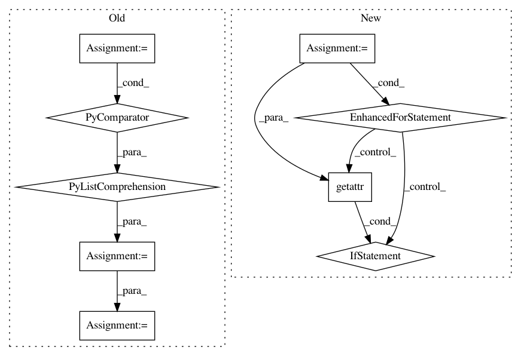

94dbc3042f5a85b399f5ce2859d4e8fbafd235b9,tests/keras/backend/backend_test.py,,check_two_tensor_operation,#Any#Any#Any#Any#,37
Before Change
def check_two_tensor_operation(function_name, x_input_shape,
y_input_shape, backend_list, **kwargs):
xval = np.random.random(x_input_shape) - 0.5
x_list = [k.variable(xval) for k in backend_list]
yval = np.random.random(y_input_shape) - 0.5
y_list = [k.variable(yval) for k in backend_list]
z_list = []
for x, y, k in zip(x_list, y_list, backend_list):
z_list.append(k.eval(getattr(k, function_name)(x, y, **kwargs)))
for i in range(len(z_list) - 1):
assert z_list[i].shape == z_list[i + 1].shape
assert_allclose(z_list[i], z_list[i + 1], atol=1e-05)
if hasattr(z_list[i], "_keras_shape"):
After Change
yval = np.random.random(y_input_shape) - 0.5
z_list = []
for k in backend_list:
if k == KCSD:
z = cntk_func_two_tensor(function_name, x_input_shape,
y=yval, **kwargs)([xval])[0]
elif k == KCTD:
z = cntk_func_two_tensor(function_name, x_input_shape,
y=y_input_shape, **kwargs)([xval, yval])[0]
else:
z = k.eval(getattr(k, function_name)(k.variable(xval), k.variable(yval), **kwargs))
if hasattr(z, "_keras_shape"):
assert z._keras_shape == z.shape
z_list += [z]
for (z1, z2) in zip(z_list[1:], z_list[:-1]):
assert z1.shape == z2.shape
assert_allclose(z1, z2, atol=1e-05)
In pattern: SUPERPATTERN
Frequency: 3
Non-data size: 9
Instances
Project Name: keras-team/keras
Commit Name: 94dbc3042f5a85b399f5ce2859d4e8fbafd235b9
Time: 2017-07-06
Author: me@taehoonlee.com
File Name: tests/keras/backend/backend_test.py
Class Name:
Method Name: check_two_tensor_operation
Project Name: keras-team/keras
Commit Name: 94dbc3042f5a85b399f5ce2859d4e8fbafd235b9
Time: 2017-07-06
Author: me@taehoonlee.com
File Name: tests/keras/backend/backend_test.py
Class Name:
Method Name: check_single_tensor_operation
Project Name: allenai/allennlp
Commit Name: bb1b1c6e27b273a66135d02a04232835d5bfc3ca
Time: 2019-11-19
Author: max.del.edu@gmail.com
File Name: allennlp/data/token_indexers/pretrained_transformer_indexer.py
Class Name: PretrainedTransformerIndexer
Method Name: tokens_to_indices